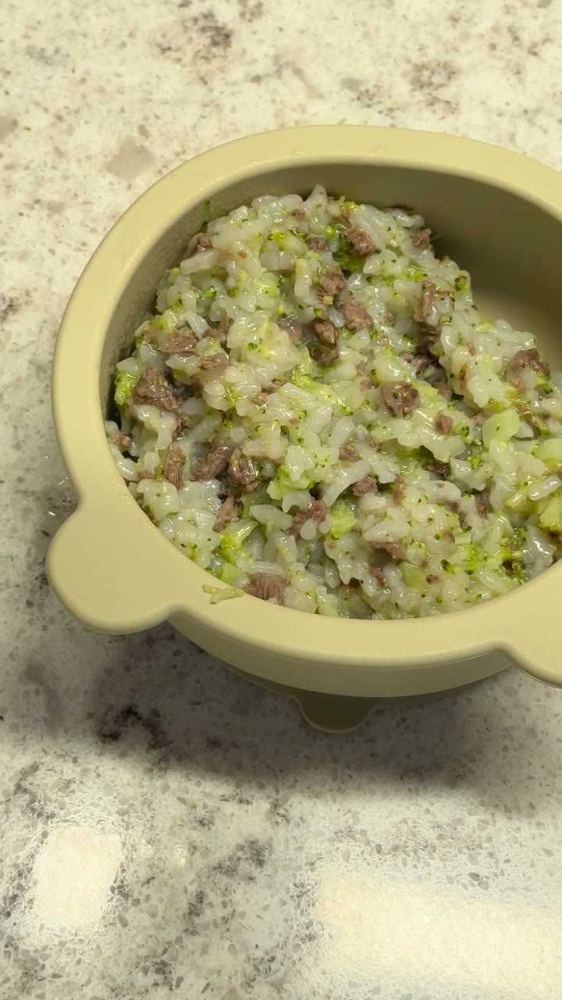
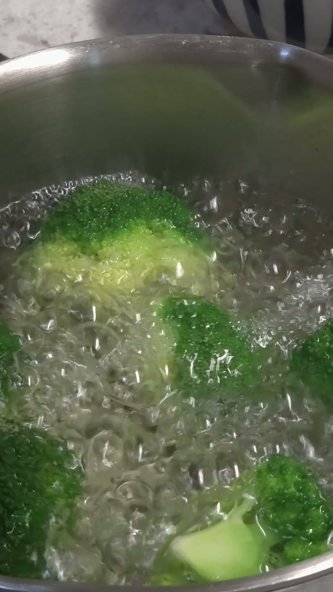
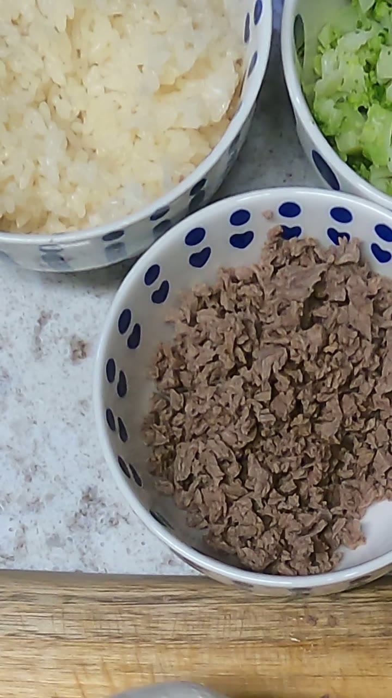
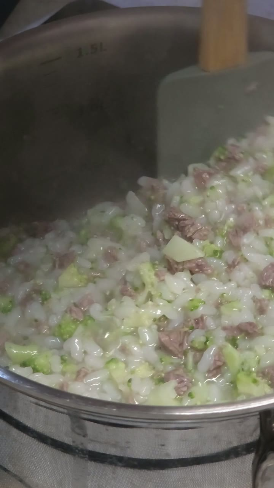

이 포스팅은 쿠팡파트너스 활동의 일환으로 이에 따른 일정액의 수수료를 제공받습니다

후기 이유식 · 10회분

브로콜리 꽃 부분을 6분 데쳐 0.5cm 크기로 썰어요.

소고기를 삶아 0.3cm 크기로 다져요. 분홍빛이 없으면 다 익은 거예요.

밥과 물, 소고기, 브로콜리를 넣고 10분 저어 가며 끓여요.
고기 끓인 육수로 만들면 더 맛있어요.
더 다양한 레시피는 이유미 앱을 확인해 주세요. 수유·잠·기저귀 같은 육아 기록도 함께 남길 수 있어요.
이유미 앱 받기아기마다 먹는 시기와 양이 달라요. 걱정되면 소아청소년과와 상담하세요.